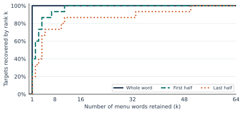
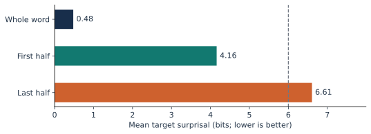

C4 · Observed receiver decisions
Whole word or half?
Five models, three matched targets, 64 possible answers. The host delivered the letters and withheld the active rule.
Word probabilities
Each row is one receiver’s response. Choose a clue to see its highest-ranked words.
Percentages use the full menu. “Other” adds the probability outside the displayed ranks.
Average target probability and exact recoveries
Each cell averages the three probabilities assigned to the correct word.

| Model | Clue | Mean target weight | Correct / trials | Mean Brier |
|---|
Target rank CDF
At rank k, the curve counts how often the target appeared among the first k words. Switch to cumulative mass to see how much probability those positions held.

Read values along these curves
| k | Whole word | First half | Last half |
|---|
Target surprisal
Lower values mean more probability on the target. A uniform guess across 64 words costs six bits.

Each model and target receives equal weight. Explore the information in the word banks.
Protocol and source data
- One independent request per product, target and delivery. The three targets were selected in advance: baseline, snowdrop and starfish.
- Ranks place the recorded argmax first among tied maxima, then follow the menu order.
All 45 decisions and vectors · Raw records and replay · Plotting source